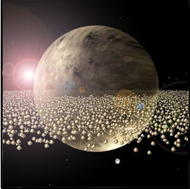
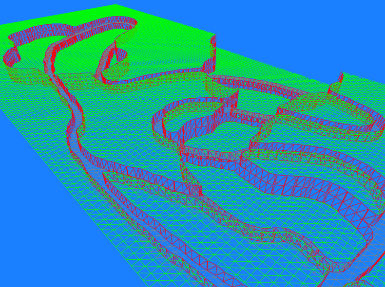

To give an idea of the power and flexibility of the library, here are
images from programs written using G3D.
These programs are by users and are not available as part of the
distribution.
| Screenshot of the g3d/contrib/ArticulatedModel demo running on GeForce6800. ArticulatedModel can load IFS, 3DS, and PLY2 models and render them with a variety of effects on a broad range of graphics cards.
|
| |
| Dan Keefe of Brown University inside the G3D-powered CAVE, working on his CAVE Painting, "La Guitarrista Gitana".
|
| Sascha Shine and Noah Wardrip-Fruin's CaveWriting system, used in Screen and other productions.
PNG |
PDF |
MOV
The font in the top one is by tom7; in the bottom one it's plain old Courier New.
In addition to G3D, the CaveWriting system uses freetype2, FTGL, and
xerces
plus Dan Keefe's IS3D. Screen is by Noah
Wardrip-Fruin, Shawn Greenlee, Josh Carroll, Andrew McClain, and Robert Coover.
|
 | "Charon" Quake III format map rendered with the g3d/contrib/Q3Map package. |
| Implemenation of Dynamic Canvas.
|
| Real-time anisotropic shell fur constructed and rendered entirely on the GPU from a flat mesh. From Morgan McGuire and John F. Hughes, Hardware Determined Edge Features, NPAR 2004
|
 | I'm using G3D for an interactive gas dynamics modeling and rendering
system. I use G3D for rendering through an FLTK window as seen here.
G3D's light-weight mathematical libraries were extended with various
numerical solvers for fluid simulation and feature extraction.
Joshua Schpok
schpok.net
|
| Boogie Ninja is a light-hearted platform game, where graphics are
actually 2D geometry created from tessellated scalar fields. As a
result, terrain and characters are all deformable, and the probable
target of Boogie Ninja's sword and arsenal! G3D's framework was used to
rapidly build the prototypes and animation tools, and is used in the
game as a basic mathematics library.
Joshua Schpok
schpok.net
|
| Hundreds of Quake II MD2 models rendered in real time with G3D::MD2Model. |
| Advanced MIP-mapping techniques by Kevin Egan, Rhythm & Hues. |
| Model car loaded with contrib/ArticulatedModel by Xpoint xpoint@xero-point.nl
|
 | Isometric Heightfield renderer using G3D::Sky for the sky. By Morgan McGuire and Peter Sibley. |
| Parking lot using the g3d/contrib/Q3Map package. |
| Photon Mapper by Gabriel Taubman. |
| Rendering using g3d/contrib/Q3Map to display radiosity computed with Q3Radiant. |
| Ray tracer. |
| Anime Robot from Hardware Determined Edge Features |
| Quake III scene, map from the Urban Terror mod. |
|  | By Peter Sibley. SIGGRAPH 2005. |
| Projective texture demo by Xpoint xpoint@xero-point.nl
|
| Visualization of air about a bat wing in flight by 'supergroup8' for course CS137 at Brown. |
|  | Marching squares terrain prototype by Max McGuire.
|
 G3D Gallery
G3D Gallery{kind=link}
{kind=link}
{kind=link}
{kind=link}
{kind=link}
{kind=link}
{kind=link}
{kind=link}
{kind=link}
{kind=link}
{kind=link}
{kind=link}
{kind=link}
{kind=link}
{kind=link}
{kind=link}
{kind=link}
{kind=link}
{kind=link}
{kind=link}
{kind=link}